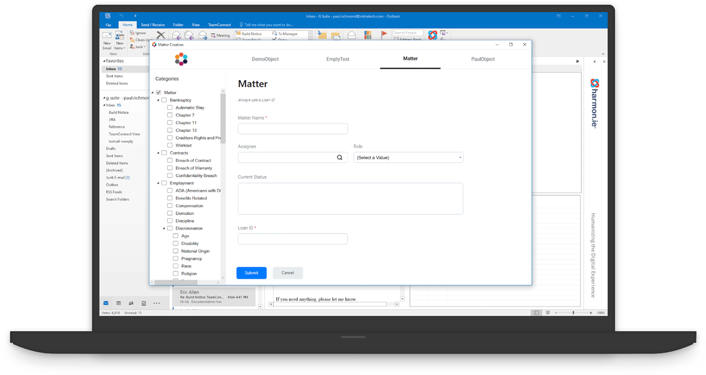
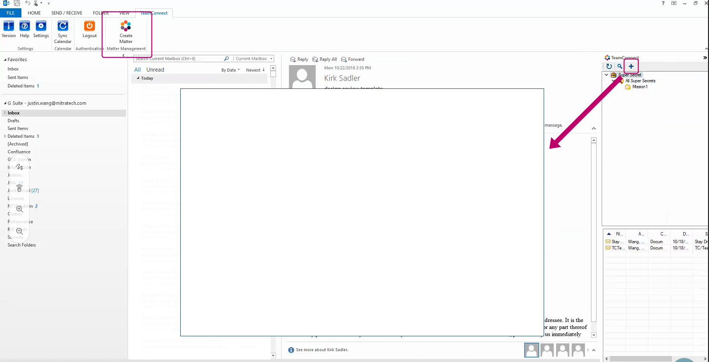

Matter Creation
Microsoft Office Plug-in
User Experience, Visual Design
3 months // 2019
In November of 2018, my team was tasked with creating an Office plug-in that would allow TeamConnect users to create matters without ever leaving Outlook.
The first release took place in February, and we are continuing to add more features to make Matter Creation as functional and beneficial to the users as possible.
My role in this project was to design Matter Creation and work with the dev team to make it come to life.
Before the first release, I also ran three client working groups to gather feedback that helped shape Matter Creation.
This case study covers the first release of Matter Creation.
Credits
UX, prototyping, user testing, design - Kailyn Lim
Design system - Bryan Walker
Product - Julia Yan
Development - Justin Wang, Nate Sewell, Paul Richmond, Kelly Jennings

Project Overview
TeamConnect is Mitratech's end-to-end enterprise legal management (ELM) solution for legal professionals. Paralegals and attorneys who use TeamConnect spend most of their time in Outlook and prefer to do most of their work there for efficiency.
Problem
Paralegals and attorneys would like to create a matter without having to log into TeamConnect, so that they can track and associate things to it quickly.
Solution
The Matter Creation plug-in for Outlook would allow users to create matters and to drag and drop documents to those matters all without leaving Outlook.

Matter Creation inside Outlook:
The right-hand panel would appear upon clicking on "Create Matter".
Clicking on the "+" button would open the Matter Creation screen
Process
Unlike some of my other projects here at Mitratech, designing Matter Creation was a quick and scrappy process:
1. Establish a visual brand
Matter Creation was going to be the first project at Mitratech with a modern UI - very exciting! I incorporated the design system that one of the design leads had created into Matter Creation. Ultimately, our goal is to use consistent interactions and UI feedback across all of Mitratech's products to build confidence in our users.
2. Design UI/UX of matter screen
The developers had worked out a functional matter screen, but it was only the bare bones. My job was not only to improve the UI of Matter Creation but also to create seamless interactions for the users. I had weekly sync-ups with the developers to prioritize and tackle the UI/UX elements.
3. Work out user flow and interaction
Inevitably, I ran into holes in the experience and flow. I utilized the client working groups (scheduled once every three weeks) to ask any usability questions and do A/B tests to work out what needed to be changed and improved upon.
4. Push to dev
After several client working groups and rounds of validations, I was ready to create Design Specs and prototypes in XD to share with the dev team.
5. Iterate, iterate, iterate
This is an ongoing project; after launching the first version, we continued to make improvements to Matter Creation to better serve our customers' needs. We have made several refinements to the workflows and built new features and have had a few more releases since then.
Create Matter Screen
The create matter screen went through several iterations. The main feedback we heard from the clients was that they want as few clicks as possible. Therefore, we decided to make matter creation a one-page process with an option to create another on the next screen.
Success/Error Messages
We had to brainstorm how to show success/error messages upon hitting the submit button. Do we want to show it as a pop-up or show on the matter creation window?
If we chose the latter, where on the screen should we show it? If it's inside the scrollbar, the message would not be in view when scrolling down to review the form.
This would mostly be problematic in the case of getting an error message and scrolling down to fix the error that the message states.
After discussing this with the clients in the working group, as well as discussing internally, we narrowed it down to showing the message on the screen rather than a pop-up to reduce the number of clicks.
From there, we decided to place the message at the top of the screen, above the scrollbar, so that the message is always in view.
"Return to Inbox" Results
Another question we ran into was "what would the user like to see on the right-side panel in Outlook upon clicking on the ‘Return to Inbox' button after successfully creating a matter?
Would they like to see all of the matter folders or only the newly created matter?" We asked these questions in another working group, and everyone unanimously agreed that it would be more useful to see a filtered view of the newly created matter.
Search Workflow
Designing the search workflow was challenging. I originally wanted a typeahead search, but we went against it due to performance; every time a user typed a letter in the search field, it would have to talk to the TeamConnect server and bring the results back.
Therefore, we decided to settle for a search pop-up that would activate the search upon hitting the search icon. We covered the different scenarios and workflows in the client working group to ensure that we were building this to deliver the most positive experience possible.
Final Deliverable
After three client working groups and countless internal discussions and brainstorming sessions, I created and delivered the design specs in XD to the dev team for implementation.
The design specs included 8 final screens, 4 clickable prototypes, as well as all of the key UI elements that the developers must know to build the product.
After the hand-off, I worked very closely with the developers to make sure all of the acceptance criteria had been met.
Due to time constraints and limited resources, the final product did not end up looking exactly like my mockups. Balancing user needs with business requirements, I learned to negotiate and adjust expectations in order to make sure the end user goals were met.

Before UI/UX enhancements (two-page form)

Final mockup handed off to the dev team (one page)

First release of Matter Creation (one page)
Takeaways
This has to be one of my favorite projects I've worked on at Mitratech because of the amount of creative freedom I had, as well as the experience I gained.
Because we built this product from scratch, we weren't bound by as many very specific boundaries as we would with legacy systems.
I enjoyed working closely with the dev team during the implementation process; this team (we called ourselves the Titans) was extremely collaborative and open to ideas.
Communicating information in every phase of the design process is the biggest lesson I learned from this project.